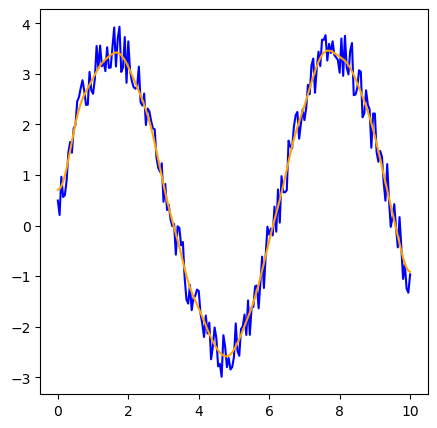

Preprocessing of Data
RHEOS offers several functions for sampling and filtering data; this page is intended to be a brief tutorial of their use. For detailed descriptions of functions and their optional arguments, see the API section.
using RHEOS
using PyPlotUpsampling and Downsampling
We generate a simple sinusoid with constant sampling rate (more details about data generation are discussed in the Generating Data section).
# Generate a sinusoidal data set
d = timeline(t_start=0, t_end=10, step = 0.4)
d = strainfunction(d,t->sin(t))
# Plotting
fig, ax = subplots(1,1, figsize=(4,4))
ax.plot(d.t, d.ϵ, "--", marker = "o", markersize = 6, color = "blue");
To change the sampling rate of the data set, the function resample can be used with the keyword argument scale, controlling the scaling factor on the sampling rate. scale=2 double the sampling rate (upsampling) whereas scale=1//2 would keep one every other value (downsampling). Any positive real value can be used, and point will be extrapolated accordingly.
# Downsample
d_downsample = resample(d, scale=1//2)
# Upsample
d_upsample = resample(d, scale=2)
# Plotting
fig, ax = subplots(1,2, figsize=(10,5))
ax[1].set_title("Downsampling")
ax[1].plot(d.t, d.ϵ, "--", marker = "o", markersize = 6, color = "blue");
ax[1].plot(d_downsample.t, d_downsample.ϵ, ".", marker = "x", markersize = 8, markeredgewidth=2, color = "orange");
ax[2].set_title("Upsampling")
ax[2].plot(d.t, d.ϵ, "--", marker = "o", markersize = 6, color = "blue");
ax[2].plot(d_upsample.t, d_upsample.ϵ, ".", marker = "x", markersize = 8, markeredgewidth=2, color = "orange");
RHEOS also allows us to specify the time step dt required between data points. Values are obtained by spline interpolation using the module Dierckx. This is particularly useful to obtain a uniform sampling rate from an uneven sample.
# Variable sampling: Downsampling region [0,5] and upsampling [5,10]
d = RheoTimeData(t=[0,0.6,1.05,1.45,2.1,2.4,2.9,3.6,4.1,4.6,5])
d = strainfunction(d,t->sin(t/3.))
# Plotting
fig, ax = subplots(1,1, figsize=(5,5))
ax.plot(d.t, d.ϵ, "--", marker = "o", markersize = 6, color = "blue");
d = resample(d,dt=0.25)
ax.plot(d.t, d.ϵ, ".", marker = "x", markersize = 8, color = "orange");

Cutting
RHEOS provides a dedicated function to remove the data outside a specified time interval.
# Generate a sinusoidal data set
d = timeline(t_start=0, t_end=10, step = 0.4)
d = strainfunction(d,t->sin(t))
d_cut = cutting(d, 2.0, 8.0)
# Plotting
fig, ax = subplots(1,1, figsize=(5,5))
ax.plot(d.t, d.ϵ, "--", marker = "o", markersize = 8, color = "blue");
ax.plot(d_cut.t, d_cut.ϵ, "--", marker = "x", markersize = 10, markeredgewidth=2, color = "orange");
Smoothing
Lastly, RHEOS provides a smoothing function, smooth. The first argument is the data to smooth and the second argument is the (very) approximate time scale of smoothing. (It uses Gaussian smoothing and can be thought of as a low pass filter for information occuring on time scales shorter than the 2nd argument). The padding can be changed using a keyword argument if desired, see API and ImageFiltering.jl Documentation for more details.
d_s=timeline(t_start=0, t_end=10, step = 0.05);
d_s=strainfunction(d_s,t->3*sin(t));
noise=strainfunction(d_s,t->rand());
d_noisy = d_s + noise
d_smooth = smooth(d_noisy, 1)
fig, ax = subplots(1,1, figsize=(5,5))
ax.plot(d_noisy.t, d_noisy.ϵ, color = "blue");
ax.plot(d_smooth.t, d_smooth.ϵ, color = "orange");